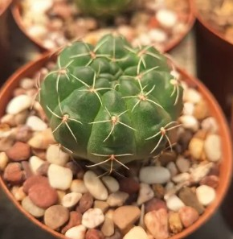

Гімнокаліціум Балдіанум (Gymnocalycium
baldianum) — це
невибагливий шароподібний кактус з Південної
Америки
(Аргентина),
який цінується за рясне та яскраве
цвітіння
великими пурпурово-червоними, рожевими або білими квітами на
початку літа.
Опис
Гімнокаліціум (Gymnocalycium)
- безстеблова, вічнозелена, сукулентна рослина сімейства Кактусових. У культурі кімнатного озеленення ця квітка була однією з перших кулястих кактусів.Це не дивно, адже різноманітність яскравих, неповторних квіток не залишає байдужим. Завдяки незвичайній естетиці цей вид ніколи не перестане користуватися популярністю.
Період цвітіння:
З початку квітня з'являються перші квіти. Цвітуть лише 2-3 літні представники. Як правило, квітки з'являються на протилежній від сонячного світла стороні. Забарвлення можуть мати найрізноманітніший: червоний, білий, жовтий.За дотримання правил догляду ця рослина може цвісти щороку.
Догляд
Температура вмісту та вологість:
Відмінно переносить кімнатні умови. Навіть за високих температур відмінно розвивається. У зимовий період необхідно забезпечити квітці умови спокою.Оптимальна температура в холодну пору року + 8 градусів. У спеку іноді можна обприскувати для підтримки вологості.
Оптимальне освітлення:
Найкраще підходить місце з постійним надходженням світла. У тіні та півтіні росте повільніше, проте не особливо не страждає.Головне правильно узгоджувати полив із освітленням. Якщо квітка постійно на сонці - полив має бути більш рясним
Фото з інтернета
Які висновки можемо зробити
- Кактуси це добре бо:
- Їсти не просять
- Поливати часто не треба
- Інколи навіть цвітуть
- На цьому думки обриваються...
Не знаю куди застосувати всі інші заголовки
4 приклад
5 приклад
6 приклад
Назва кактуса взята з реального життя ось пруф